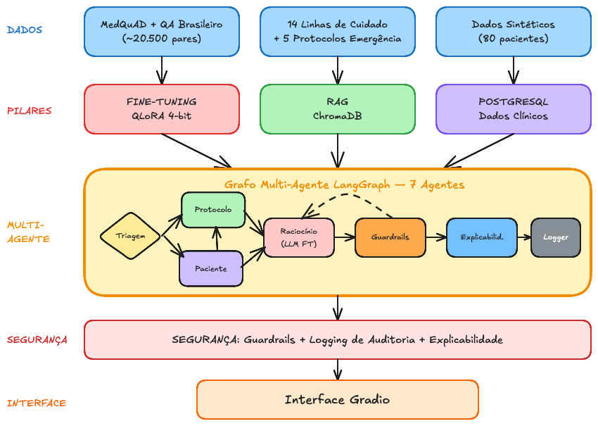

Grupo Sala 14
Treinar modelo com dados médicos
Pipeline integrado com consultas a BD
Fluxos automatizados multi-agente
Guardrails, logging, explainability

| Pilar | Tecnologia | Descrição |
|---|---|---|
| Fine-tuning | QLoRA 4-bit | Mistral 7B + MedQuAD (~20.500 QA) |
| RAG | ChromaDB | 14 Linhas de Cuidado + 5 emergências |
| Multi-Agente | LangGraph | 7 agentes especializados |
| Segurança | Guardrails | Sem prescrição direta, validação humana |
| Interface | Gradio | Chat interativo para médicos |
8 scripts numerados para reproduzir o projeto do zero:
python scripts/01_gerar_dados_sinteticos.py # 80 pacientes fictícios
python scripts/02_setup_postgres.py # Banco de dados
python scripts/03_preparar_dataset.py # MedQuAD traduzido
# --- Fine-tuning no Google Colab (notebook) ---
python scripts/04_indexar_protocolos.py # ChromaDB
python scripts/05_avaliar_baseline.py # Mistral 7B base
python scripts/06_avaliar_finetuned.py # Modelo fine-tuned
python scripts/07_iniciar_app.py # Interface Gradio
python scripts/08_exportar_gguf.py # Formato CPUTreinamento da LLM Personalizada
Fonte National Institutes of Health (NIH)
{
"instruction": "Quais são os
sintomas do diabetes tipo 2?",
"input": "",
"output": "Os sintomas comuns
incluem sede excessiva..."
}| LoRA rank (r) | 16 |
| LoRA alpha | 16 |
| Learning rate | 2e-4 |
| Batch efetivo | 16 |
| Épocas | ~1.3 (ótimo) |
Checkpoint-1500 comparado ao Mistral 7B Instruct v0.3 sem fine-tuning
Pergunta: "Quais são os sintomas do diabetes tipo 2?"
The symptoms of type 2 diabetes include increased thirst, frequent urination, increased hunger, fatigue, blurred vision...
(Resposta em inglês, genérica)
Os sinais e sintomas do diabetes tipo 2 incluem sede excessiva, micção frequente, fadiga, visão turva e cicatrização lenta de feridas...
(Português fluente, terminologia médica)
Assistente em Ação
Classifica como consulta de protocolo → Busca no ChromaDB → Pathway-Hipertensão
Classifica como ambos → PostgreSQL (dados) + ChromaDB (Pathway-Diabetes) → Recomendação personalizada
Guardrails, Logs e Explicabilidade
| Regra | Detecta | Ação |
|---|---|---|
| Sem prescrição direta | "tome X mg", "prescrevo" | Reescreve como sugestão |
| Validação humana | Ausência de disclaimer | Adiciona automaticamente |
| Sem diagnóstico definitivo | "o paciente tem" | Adiciona ressalva |
| Consistência | Contradição com contexto | Rejeita e solicita retry |
Retry automático: Até 2 tentativas com feedback para correção
Todas as interações são registradas em JSON estruturado:
{
"timestamp": "2026-03-14T10:30:00-03:00",
"session_id": "uuid-da-sessao",
"query": "Quais exames pedir para Maria Santos?",
"query_type": "ambos",
"protocols_retrieved": ["Pathway-Diabetes", "Pathway-Hipertensao"],
"patient_data_used": {"nome": "Maria Santos", "comorbidades": [...]},
"guardrail_checks": [
{"rule": "no_prescription", "result": "pass"},
{"rule": "human_validation", "result": "pass"}
],
"response_time_ms": 2340
}Cada resposta indica os protocolos e exames utilizados
Ex: Pathway-Diabetes §3b, Exame HbA1C de 15/01/2026
Alta, Média ou Baixa baseado na concordância das fontes
Alta = múltiplas fontes concordantes
Alertas quando há limitações ou ressalvas
Ex: dados desatualizados, resposta reescrita
Resultados e Links
| Formato | Uso | Hardware |
|---|---|---|
| LoRA | Inferência rápida (~2-5s) | GPU NVIDIA (CUDA) |
| GGUF Q4_K_M | Portabilidade (~5-15s) | CPU / Apple Silicon |
huggingface.co/zagari/medical-assistant-mistral-7b-ft
Tech Challenge Fase 3
Grupo Sala 14
Adriana • Diego • Eduardo • Renan